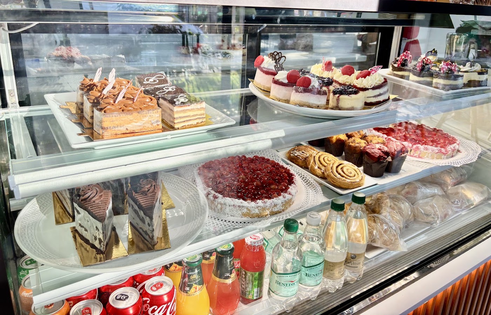
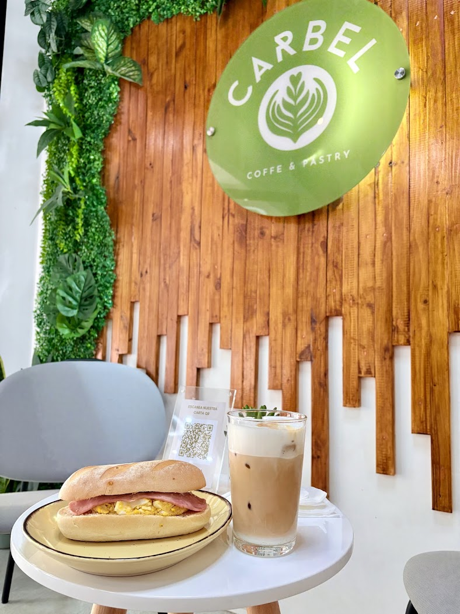
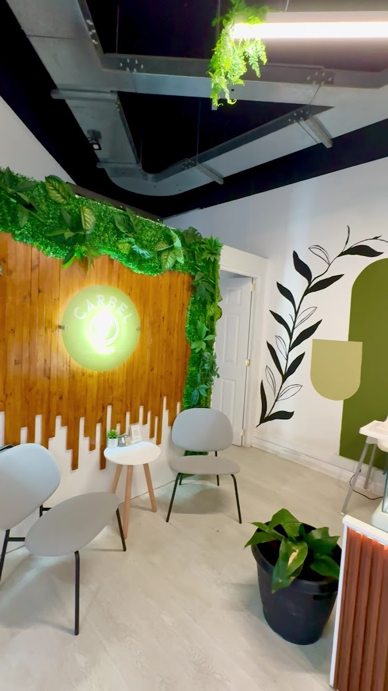
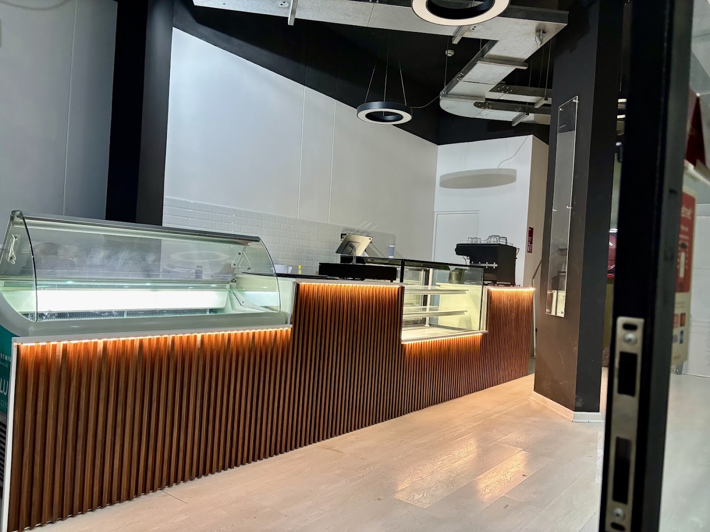

Brunch a toda hora
Tres brunchs completos, dos desayunos hasta las 12:30 y dos onces desde las 18:00. Con café, jugo natural y pastel incluidos.

Cafetería de especialidad · Brunch · Heladería · San Bernardo
Brunch a toda hora, pastelería propia, helados artesanales y café de especialidad en Av. América 449. Con carta completa, precios reales y opciones sin gluten, sin azúcar y veganas.
Más de 90 productos entre brunch, cafetería, pastelería, pizzas, heladería y mocktails. Todos con su precio real.
Tres brunchs completos, dos desayunos hasta las 12:30 y dos onces desde las 18:00. Con café, jugo natural y pastel incluidos.
"Pasteles" es la palabra más repetida en sus 98 opiniones: 16 dulces en vitrina, más una línea completa sin azúcar, sin gluten y vegana.
Sin gluten, sin azúcar, vegano y keto. Google resume sus opiniones destacando las muchas opciones veganas disponibles.
Carbel es cafetería de especialidad, pastelería y heladería en Av. América 449. Café en grano recién extraído, matcha Adagio, cold brew, pizzas artesanales y helado 100% artesanal de El Taller.
Con 4.7 estrellas y 98 opiniones, Google resume lo que dicen sus clientes: "delicioso café de especialidad, gran variedad de pasteles y sabroso helado, con muchas opciones veganas disponibles", además del ambiente "cómodo, acogedor y luminoso" y el servicio "excelente y rápido".
El aire acondicionado lo menciona textualmente una de sus reseñas reales.



Esta es su carta real completa, con los precios que ellos mismos publican. Arma tu pedido y el total se calcula solo.
"Muy buena experiencia al visitar esta cafetería de especialidad. La atención fue excelente, y lo mejor fue que tenían opciones sin gluten y sin azúcar. Pedí un americano, un kuchen de nuez y una preparación de autor en base a especias y leche. Qué rico pillar cosas así en San Bernardo."
"100% recomendado este lugar. El café es delicioso y de calidad. La pastelería también muy rica y bien presentada. Para los días de calor adentro de la cafetería es muy agradable porque tiene aire acondicionado. ¡La atención siempre ha sido muy buena!"
"Descubrí este lugar y superó todas mis expectativas: lugar acogedor, lindo y rico. Su comida fresca y la atención 10/10. Estaba lleno y aún así el tiempo de espera no superó los 10 minutos."